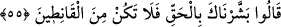
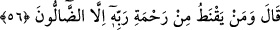

müjdeliyorsunuz?” şeklindedir. Çünkü yaşlı iken çocuğu olmak, normal şartlarda
olmayacak ve iki yaşlı için böyle bir şeyin gerçekleşmesi hayret edilecek bir şeydir. Bu
mânâya göre ifâde hâl olmuş; mânâ da, ‘Beni bu yaşlı hâlimle mi müjdeliyorsunuz?!”
şeklinde olmuş olur. Ya da âyet metnindeki “alâ” harfi, ba‘de (sonra) mânâsındadır. O
zaman mânâ şöyle olur: “Bu ihtiyarlık ve yaşlılığa duçar olduktan sonra mı beni
müjdeliyorsunuz?”
“Ne tuhaf bir şeyle müjdeliyorsunuz?” Tefsîr-i Fârisî’de şöyle denilir: “Siz bana ne
tür bir müjde veriyorsunuz?!” “dedi.” Bu cümlenin başındaki soru edâtı, taaccüb
mânâsı taşıyan bir soru edâtıdır.
55. “Sana gerçeği müjdeledik, sakın ümidsizliğe düşenlerden olma!” dediler.
“Sana gerçeği” hiç şüphesiz bir şekilde gerçekleşecek bir şeyi “müjdeledik.”
Dolayısıyla “sakın” bundan “ümidsizliğe düşenlerden olma!” dediler.” Çünkü Allah
Teâlâ, bir insanı, ana-babasız yaratmaya dahî kâdirken, bir pîr-i fânî ile kısır bir yaşlı
kadından nasıl yaratamasın!
İbrâhim (a.s.)’ın Allah’ın -kulları arasında kâide hâlini almış- sünnetine mebnî olan
bu normal hayretiyle anlatmak istediği, Allah’ın kudreti bakımından böyle bir şeyin
ihtimâl dışı olduğu değil, Allah’ın kendisine ne kadar büyük bir nîmet bahşettiğiydi.
Nitekim Allah’ın meleklerden naklen “şüphe edenlerden olma!” ve benzerlerini değil de
“ümitsizliğe düşenlerden olma!” buyurmuş olması da bunu göstermektedir.
56. (İbrâhim) dedi ki: “Rabbinin rahmetinden sapıklardan başka kim ümid
keser?”
İbrâhim (a.s.) “dedi ki: “Rabbinin rahmetinden sapıklardan başka kim ümid keser?”
Burada ki soru (istifhâm) inkârîdir. Yâni Yâkub (a.s.)’ın “Allah’ın rahmetinden ancak
kâfirler ümid keser.” (Yusuf, 12/87) demesi gibi, ancak ma’rifetin ve doğrunun
yolundan sapmış olanlar, O’nun ne kadar geniş bir rahmeti, ne kadar eksiksiz ilim ve
kudreti olduğunu anlayamayanlar ümid keser.
İbrâhim (a.s.)’ın murâdı, kendisinde ümidsizlik bulunmadığını en belîğ bir şekilde
anlatmaktır. Yâni benim Allah Teâlâ’nın rahmetinden ümid kesmem söz konusu değildir.
Bütün söylediğim, benim için son derece değerli olan bu ni’metin üzerime feyezân
etmesine şu anki hâlimin müsâid olmadığını beyân etmektir.
İbrâhim (a.s.)’ın kendisinin de hanımının da yaşlı olmasına rağmen, ilim sâhibi bir